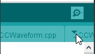
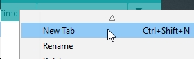

Creating Automations


The Automation Process
Once started, all sequences step through a list of simple keywords until they reach a DONE keyword.
There can be a startup sequence (keywords at the beginning of the script), which if present is automatically executed, as are any sequences that contain an AUTOSTART.
Note
There is an implied AUTOSTART whereby everything in myAutomation.h prior to the first DONE keyword is executed on startup. If you don’t wish anything to happen at startup, simply add the keyword DONE as the first line.
Multiple concurrent sequences are supported.
For a full list of keywords, see EX-RAIL Command Summary, and for further detailed information, see the EX-RAIL Command Reference.
The script containing your sequences is added to your Command Station by creating a file called “myAutomation.h” in the same folder as CommandStation-EX.ino.
Connecting your Arduino and pressing the Upload button in the usual way will save the file and upload your script into the Command Station.
To create the myAutomation.h file in the Arduino IDE, use the pulldown button and select New Tab (or simply press Ctrl+Shift+N).
 {kind=link}
{kind=link}
Enter the file name “myAutomation.h” (This is case sensitive)

And type your script in.

Some Simple Examples
Example 1: Creating Routes for a Throttle
A typical Route might be used to set a series of turnouts in response to a single button in a throttle. The EX-RAIL instructions to do this might look like
ROUTE(1,"Coal Yard exit")
THROW(1)
CLOSE(7)
DONE
Or you can write it like this
ROUTE(1,"Coal Yard exit") THROW(1) CLOSE(7) DONE
Or add comments
// This is my coal yard to engine shed route
ROUTE(1,"Coal Yard exit") // appears in the throttle
THROW(1) // throw turnout onto coal yard siding
CLOSE(7) // close turnout for engine shed
DONE // that's all folks!
Of course, you may want to add signals, and time delays
SIGNAL(77,78,79) // see the Defining Signals section
SIGNAL(92,0,93) // below for details
ROUTE(1,"Coal Yard exit")
RED(77)
THROW(1)
CLOSE(7)
DELAY(5000) // this is a 5 second wait
GREEN(92)
DONE
Example 2: Automating Signals with Turnouts
By intercepting a turnout change command, it’s easy to automatically adjust signals or
automatically switch an adjacent facing turnout. Use an ONTHROW or ONCLOSE keyword to detect a particular turnout change:
ONTHROW(8) // When turnout 8 is thrown,
THROW(9) // must also throw the facing turnout
RED(24)
DELAY(2000)
GREEN(27)
DONE
ONCLOSE(8) // When turnout 8 is closed
CLOSE(9)
RED(27)
DELAY(2000)
GREEN(24)
DONE
Defining Turnouts
EX‑CommandStation supports a number of different turnout hardware configurations, but your automation treats them all as simple ID numbers. Turnouts may be defined using <T> commands from JMRI, or in SETUP("<T ...>") commands placed in your mySetup.h file, or C++ code in mySetup.h, just like earlier versions.
You may, however, find it more convenient to define turnouts using EX-RAIL commands, which may appear anywhere in the ‘myAutomation.h’ file, even after they are referenced in an ONTHROW, ONCLOSE, THROW or CLOSE command. (EXRAIL extracts the turnout definitions just once from your script at Command Station startup.)
Turnouts defined in ‘myAutomation.h’ will still be visible to WiThrottle and JMRI in the normal way.
A TURNOUT sends DCC signals to a decoder attached to the track, a PIN_TURNOUT sends a “throw” or “close” (5V or 0V signal) to a pin on the Arduino, and a SERVO_TURNOUT sends an I2C serial command to a servo board connected to your servos.
See the EX-RAIL Command Summary page for TURNOUT, PIN_TURNOUT and SERVO_TURNOUT definitions.
Defining Signals
Signals can now simply be a decoration to be switched by the route process; they don’t need to control anything.
GREEN(55) would turn signal 55 green, and RED(55) would turn it red. Somewhere in the script there must be a SIGNAL command like this: SIGNAL(55,56,57). This defines a signal with ID 55, where the Red/Stop lamp is connected to pin 55, the Amber/Caution lamp to pin 56, and the Green/Proceed lamp to pin 57. The pin allocations do not need to be contiguous, and the red pin number is also used as the signal ID. Thus you can change the signal by RED(55), AMBER(55), or GREEN(55). This means you don’t have to manually turn off the other lamps. A RED/GREEN only signal may be created with a zero amber pin.
Example 3: Automating various non-track items
This normally takes place in a timed loop, for example alternate flashing of a fire engine’s lights. To do this use a SEQUENCE.
SEQUENCE(66)
SET(101) // sets output 101 HIGH
RESET(102) // sets output 102 LOW
DELAY(500) // wait 0.5 seconds
SET(102) // swap the lights
RESET(101)
DELAY(500) // wait 0.5 seconds
FOLLOW(66) // follow sequence 66 continuously
Note, however, that this sequence will not start automatically: it must be started during the startup process (see later) using START(66).
Example 4: Automating a train (simple loop)
Start with something as simple as a single loop of track with a station and a sensor (connected to pin 40 for this example) at the point where you want the train to stop.

Using an AUTOMATION keyword means that this automation will appear in the throttle so you can drive the train manually, and then hand it over to the automation at the press of a button.
* Technically, an automation can independently run multiple locos along the same path through the layout, but this is discussed later…
AUTOMATION(4,"Round in circles")
FWD(50) // move forward at DCC speed 50 (out of 127)
AT(40) // when you get to sensor on pin (40)
STOP // stop the train
DELAYRANDOM(5000,20000) // delay somewhere between 5 and 20 seconds
FWD(30) // start a bit slower
AFTER(40) // until sensor on pin 40 has been passed
FOLLOW(4) // and continue to follow the automation
The instructions are followed in sequence by the loco given to it; the AT command just leaves the loco running until that sensor is detected.
Notice that this automation does not specify the loco address. If you drive a loco with the throttle and then hand it over to this automation, then the automation will run with the loco you last drove.
Example 5: Signals in a train script
Adding a station signal to the loop script is extremely simple, but it does require a mind-shift for some modellers who like to think in terms of signals being in control of trains! EX-RAIL takes a different approach, by animating the signals as part of the driving script. Thus set a signal GREEN before moving off (and allow a little delay for the driver to react) and RED after you have passed it.
SIGNAL(77,78,79) // see the Defining Signals section above for details
AUTOMATION(4,"Round in circles")
FWD(50) // move forward at DCC speed 50 (out of 127)
AT(40) // when you get to sensor on pin (40)
STOP // Stop the train
DELAYRANDOM(5000,20000) // delay somewhere between 5 and 20 seconds
GREEN(77) // set signal #77 to Green
DELAY(2500) // This is not Formula1!
FWD(30) // start a bit slower
AFTER(40) // until sensor on pin 40 has been passed
RED(77) // set signal #77 to Red
FOLLOW(4) // and continue to follow the automation
Example 6: Single line shuttle
Consider a single line, shuttling between stations A and B.

Starting from Station A, the steps may be something like:
Wait between 10 and 20 seconds for the guard to stop chatting up the girl in the ticket office.
Move forward at speed 30
When I get to B, stop.
Wait 15 seconds for the tea trolley to be restocked
Move backwards at speed 20
When I get to A, stop.
Notice that the sensors at A and B are near the ends of the track (allowing for braking distance, but don’t care about train length or whether the engine is at the front or back.) We have wired sensor A on pin 41, and sensor B on pin 42 for this example.
SEQUENCE(13)
DELAYRANDOM(10000,20000) // random wait between 10 and 20 seconds
FWD(50)
AT(42) // sensor 42 is at the far end of platform B
STOP
DELAY(15000)
REV(20) // Reverse at DCC speed 20 (out of 127)
AT(41) // far end of platform A
STOP
FOLLOW(13) // follows sequence 13 again… forever
Note a SEQUENCE is exactly the same as an AUTOMATION except that it does NOT appear in the throttle.
When the Command Station is powered up or reset, EX-RAIL starts operating at the beginning of the file. For this sequence we need to set a loco address and start the sequence:
SENDLOCO(3,13) // Start sequence 13 using loco 3
DONE // This marks the end of the startup process
The sequence can also be started from a serial monitor with the command </ START 3 13>.
If you have multiple separate sections of track which do not require inter-train cooperation, you may add many more separate sequences and they will operate independently.
Although the above is trivial, the routes are designed to be independent of the loco address so that we can have several locos following the same route at the same time (not in the end to end example above!), perhaps passing each other or crossing over with trains on other routes.
The example above assumes that loco 3 is sitting on the track and pointing in the right direction. A bit later you will see how to script an automatic process to take whatever loco is placed on the programming track, and send it on its way to join in the fun!
Example 7: Running multiple inter-connected trains
So what about routes that cross or share single lines (passing places etc)? Let’s add a passing place between A and B. S= Sensors, T=Turnout number. So now our route looks like this:

Assuming that you have defined your turnouts with TURNOUT commands.
SEQUENCE(11)
DELAYRANDOM(10000,20000) // random wait between 10 and 20 seconds
CLOSE(1)
CLOSE(2)
FWD(30)
AT(42) // sensor 42 is at the far end of platform B
STOP
DELAY(15000)
THROW(2)
THROW(1)
REV(20)
AT(41)
STOP
FOLLOW(11) // follows sequence 11 again… forever
All well and good for one loco, but with 2 (or even 3) on this track we need some rules. The principle behind this is
To enter a section of track that may be shared, you must RESERVE it. If you cant reserve it because another loco already has, then you will be stopped and the script will wait until such time as you can reserve it. When you leave a shared section you must free it.
Each “section” is merely a logical concept, there are no electronic section breaks in the track. You may have up to 255 sections (more can be supported by a code mod if required).
So we will need some extra sensors (hardware required) and some logical blocks (all in the mind!):

We can use this diagram to plan routes. When we do so, it will be easier to imagine 4 separate mini routes, each passing from one block to the next. Then we can chain them together to form a full route, but also start from any block.
So… lets take a look at the routes now. For convenience I have used route numbers that help remind us what the route is for.
SEQUENCE(12) // From block 1 to block 2
DELAYRANDOM(10000,20000) // random wait between 10 and 20 seconds
RESERVE(2) // we wish to enter block 2… so wait for it
CLOSE(1) // Now we “own” the block, set the turnout
FWD(30) // and proceed forward
AFTER(71) // Once we have reached AND passed sensor 71
FREE(1) // we no longer occupy block 1
AT(72) // When we get to sensor 72
FOLLOW(23) // follow route from block 2 to block 3
SEQUENCE(23) // Travel from block 2 to block 3
RESERVE(3) // will STOP if block 3 occupied
CLOSE(2) // Now we have the block, we can set turnouts
FWD(20) // we may or may not have stopped at the RESERVE
AT(42) // sensor 2 is at the far end of platform B
STOP
FREE(2)
DELAY(15000)
FOLLOW(34)
SEQUENCE(34) // you get the idea
RESERVE(4)
THROW(2)
REV(20)
AFTER(73)
FREE(3)
AT(74)
FOLLOW(41)
SEQUENCE(41)
RESERVE(1)
THROW(1)
REV(20)
AT(41)
STOP
FREE(4)
FOLLOW(12) // follows Route 12 again… forever
Does that look long? Worried about memory on your Arduino…. Well the script above takes about 100 BYTES of program memory and no dynamic SRAM!
If you follow this example carefully, you’ll see it allows for up to 3 trains at a time, because one of them will always have somewhere to go. Notice that there is a common theme to this…
RESERVE where you want to go. If you are moving and the reserve fails, your loco will STOP and the reserve waits for the block to become available. *These waits and the manual WAITS do not block the Arduino process… DCC and the other locos continue to follow their routes!
Set the points to enter the reserved area. Do this ASAP, as you may be still moving towards them.
Set any signals.
Move into the reserved area.
Reset your signals.
Free off your previous reserve as soon as you have fully left the block.
In addition, it is possible to take decisions based on blocks reserved by other trains. The IFRESERVE(block) can be used to reserve a block if it’s not already reserved by some other train, or skip to the matching ENDIF. For example, this allows a train to choose which platform to stop at based on prior occupancy. It is features like this that allow for more interesting and unpredictable automations.
Starting the system
Starting the system is tricky, because we need to place the trains in a suitable position and set them going. We need to have a starting position for each loco, and reserve the block(s) it needs to keep other trains from crashing into it.
Warning
This EX-RAIL version isn’t ready to handle locos randomly placed on the layout after a power down!
For a known set of locos, the easiest way is to define the startup process at the beginning of the script. E.g. for two engines, one at each station.
// ensure all blocks are reserved as if the locos had arrived there
RESERVE(1) // start with a loco in block 1
RESERVE(3) // and another in block 3
SENDLOCO(3,12) // send Loco DCC addr 3 on to route 12
SENDLOCO(17,34) // send loco DCC addr 17 to route 34
DONE // don't drop through to the first sequence definition that follows in the script file
Hint
Some interesting points about the startup:
You don’t need to set turnouts, because each route is setting them as required.
Signals default to RED on power up, and get turned GREEN when a route clears them.
Drive-Away feature
EX-RAIL can switch a track section between programming and mainline.
Here for example is a launch sequence that has no predefined locos but allows locos to be added at station 1 while the system is in motion. Let’s assume that the track section at Station1 is isolated and connected to the programming track power supply. Also that we have a “launch” button connected where sensor 17 would be and an optional signal (i.e. 3 LEDs) on the control panel connected where signal 27 would be.
SEQUENCE(99)
SIGNAL(27,28,29)
RED(27) // indicate launch not ready
AFTER(17) // user presses and releases launch button
UNJOIN // separate the programming track from main
DELAY(2000)
AMBER(27) // Show amber, user may place loco
AFTER(17) // user places loco on track and presses “launch” again
READ_LOCO // identify the loco
GREEN(27) // show green light to user
JOIN // connect prog track to main
START(12) // send loco off along route 12
FOLLOW(99) // keep doing this for another launch
The READ_LOCO reads the loco address from the PROG track and the current route takes on that loco. By altering the script slightly and adding another sensor, it’s possible to detect which way the loco sets off and switch the code logic to send it in the correct direction by using the INVERT_DIRECTION instruction so that this locos FWD and REV commands are reversed. (easily done with diesels!)
Roster entries
EX-RAIL has a ROSTER() function to allow you to define all of your locomotives with a list of their defined functions which is advertised to WiThrottle applications, just like turnouts and routes.
The functions can simply be listed as “F” numbers, or you can provide a text description of the function. Prefacing the function with a “*” indicates it is momentary, meaning it is only activated while holding that function button down.
A very simple roster entry for a loco with ID 1506 called “HUSA” with three functions of light, bell, and momentary horn would look like this:
ROSTER(1506, "HUSA", "Light/Bell/*Horn")
A more complex example with generic functions for the same loco (note the momentary F2 for horn):
ROSTER(1506, "HUSA", "F0/F1/*F2/F3/F4/F5/F6/F7/F8/F9/F10/F11/F12/F13/F14/F15/F16/F17/F18/F19/F20/F21/F22/F23/F24/F25/F26/F27/F28")
The same again, with more text functions defined to represent a number of different sounds:
ROSTER(1506, "HUSA", "Lights/Bell/*Horn/Air/Brake/Coupling/Compressor/Sand/Mute/F9/F10/F11/F12/F13/F14/F15/F16/F17/F18/F19/F20/F21/F22/F23/F24/F25/F26/F27/F28")
Sounds
You can use FON(n) and FOFF(n) to switch loco functions… eg sound horn.
Sensors
EX‑CommandStation allows for sensors that are Active Low or Active High. This is particularly important for IR sensors that have been converted to detect by broken beam, rather than reflection. By making the sensor number negative, the sensor state is inverted. e.g.
AT(-5).Magnetic/Hall effect sensors work for some layouts, but beware of how you detect the back end of a train approaching the buffers in a siding, or knowing when the last car has cleared a crossing.
Handling sensors in the automation is made easy because EX-RAIL throws away the concept of interrupts (“oh… sensor 5 has been detected… which loco was that and whatever do I do now?”) and instead has the sequences work on the basis of “do nothing, maintain speed until sensor 5 triggers, and then carry on in the script”.
Sensor numbers are direct references to VPINs (virtual pin numbers) in the Hardware Abstraction Layer. For a Mega onboard GPIO pin, this is the same as the digital pin number. Other pin ranges refer to I/O expanders etc.
Sensors with ID’s 0 to 255 may be LATCHED/UNLATCHED in your script. If a sensor is latched on by the script, it can only be set off by the script… so
AT(5) LATCH(5)for example effectively latches the sensor 5 on when detected once.Sensor polling by JMRI is independent of this, and may continue if
<S>commands are used.
Outputs
Generic Outputs are mapped to VPINs on the HAL (as for sensors)
SIGNAL definitions are just groups of 3 Output pins that can be more easily managed.
Sequence Numbers
All ROUTE / AUTOMATION / SEQUENCE ids are limited to 1 - 32767
0 is reserved for the startup sequence appearing as the first entry in the EXRAIL script.